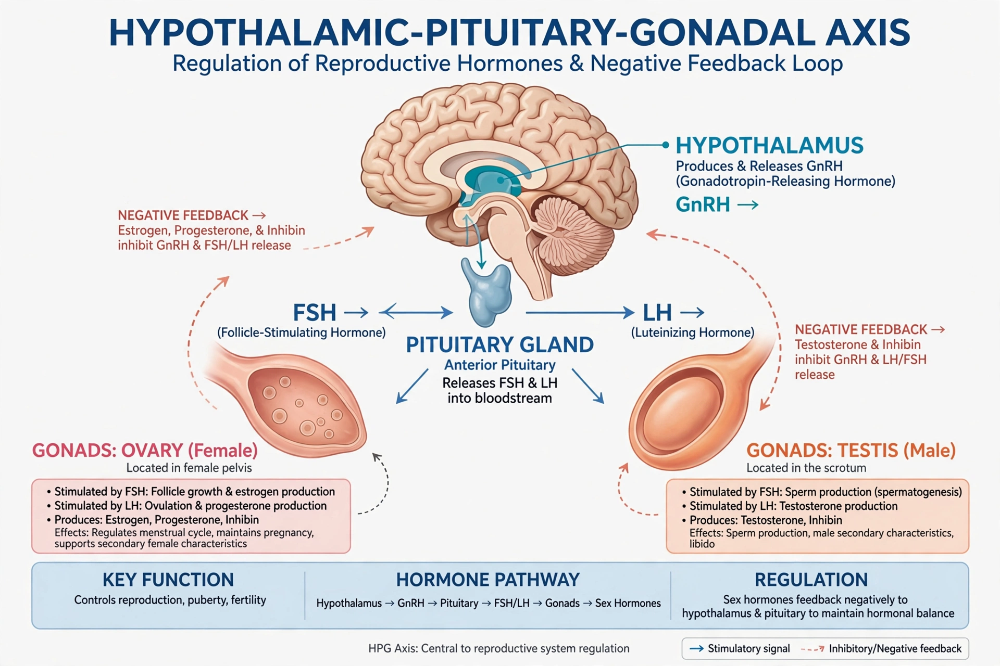

| Process | Physical maturation to sexual maturity |
|---|---|
| Typical onset | Girls: 8–13 years; Boys: 9–14 years |
| Trigger | Reactivation of the hypothalamic–pituitary–gonadal axis (GnRH) |
| Key hormones | Oestrogen, testosterone, LH, FSH |
| Assessment | Tanner stages |
| Preceded by | Adrenarche |

Puberty is the process of physical changes through which a child's body matures into an adult body capable of sexual reproduction. It is initiated by hormonal signals from the brain to the gonads: in response to these signals, the ovaries or testes produce sex steroids — principally oestrogen and testosterone — which drive the development of secondary sexual characteristics, a growth spurt, and changes in body composition and the brain. Puberty marks the beginning of adolescence.
Puberty begins with the reactivation of the hypothalamic–pituitary–gonadal (HPG) axis: the hypothalamus secretes gonadotropin-releasing hormone (GnRH) in pulses, stimulating the pituitary to release LH and FSH. Average onset is around ages 10–11 for girls and 11–12 for boys, with wide normal variation influenced by genetics, nutrition and health. A long-term secular trend toward earlier puberty has been documented over the past two centuries. Onset before age 8 in girls or 9 in boys is termed precocious puberty; significant delay may also warrant investigation.
In girls, the first sign is usually thelarche (breast development), followed by pubarche (pubic hair), a growth spurt, and menarche — the first menstrual period — typically around age 12–13. In boys, the first sign is testicular enlargement, followed by pubic hair, rapid growth, deepening of the voice and increased muscle mass. In both sexes, the Tanner scale stages development from stage 1 (prepubertal) to stage 5 (adult). Other changes include acne, body odour, and redistribution of body fat.
Hormonal and physical changes coincide with significant brain development and psychosocial transitions; early or late maturation relative to peers can affect self-image and behaviour.